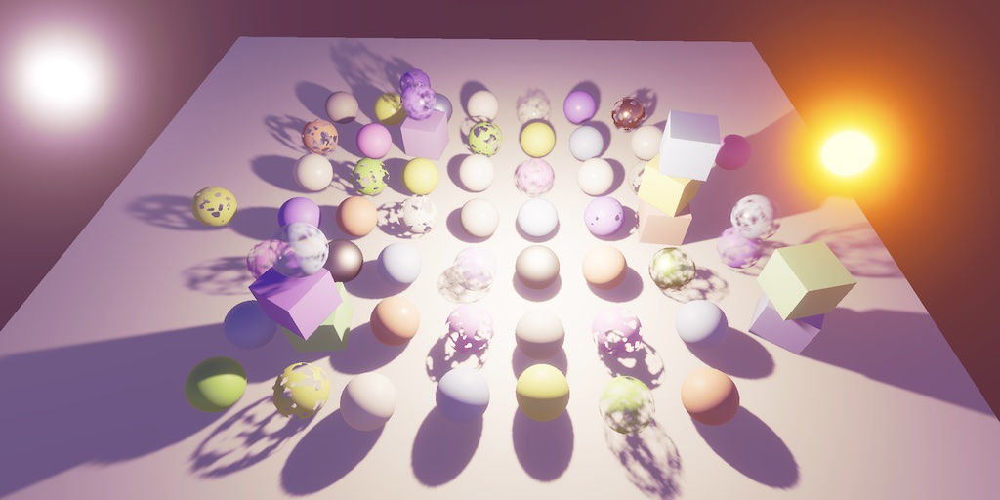
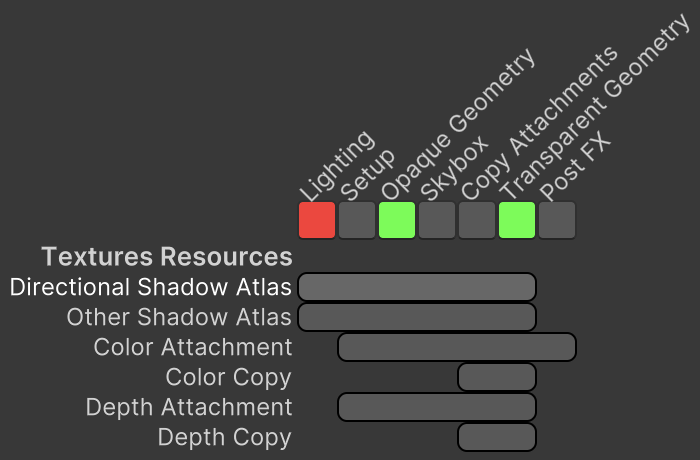

Custom SRP 2.3.0
Shadow Textures
- Let the render graph manage shadow textures.
- Merge lighting code into lighting pass.

This tutorial is made with Unity 2022.3.12f1 and follows Custom SRP 2.2.0.
Managed Shadow Textures
In the previous tutorial we let the render graph manage the camera textures. This time we also let it manage the shadow textures.
Create a We'll also let We can indicate that our depth textures are specifically for shadow maps, by setting the To make this work we have to set up lighting and shadows while recording the graph, not while executing it. So we remove the And add it to Also, we no longer have to deal with missing textures in Now that there are no more textures to release up we can remove The next step is to adapt Both We currently set the lights-per-object shader keyword in Instead we do it in However, that method requires a As Moving on to the passes, And This pass should not be culled if the shadow textures aren't used anywhere else, because it also sets up all GPU lighting data. So disable pass culling for it. The shadow textures are read by To tie it all together, adapt Finally, we can get rid of the lighting data here. Shadows
ShadowTextures ref struct type, like CameraRendererTextures but with only two texture handles, for the directional and other shadow atlases.using UnityEngine.Experimental.Rendering.RenderGraphModule;
public readonly ref struct ShadowTextures
{
public readonly TextureHandle directionalAtlas, otherAtlas;
public ShadowTextures(
TextureHandle directionalAtlas,
TextureHandle otherAtlas)
{
this.directionalAtlas = directionalAtlas;
this.otherAtlas = otherAtlas;
}
}
Shadows will use these handles instead of its current render textures, so give it fields for them. TextureHandle directionalAtlas, otherAtlas;
Shadows create and register the handles, via a new GetRenderTextures method that returns the shadow textures. It needs the render graph and a builder as parameters. To keep things simple we'll always provide valid handles. If an atlas is not needed we use the defaultShadowTexture from the graph's defaultResources. That refers to a 1×1 shadow texture that always exists. public ShadowTextures GetRenderTextures(
RenderGraph renderGraph,
RenderGraphBuilder builder)
{
int atlasSize = (int)settings.directional.atlasSize;
var desc = new TextureDesc(atlasSize, atlasSize)
{
depthBufferBits = DepthBits.Depth32,
name = "Directional Shadow Atlas"
};
directionalAtlas = shadowedDirLightCount > 0 ?
builder.WriteTexture(renderGraph.CreateTexture(desc)) :
renderGraph.defaultResources.defaultShadowTexture;
atlasSize = (int)settings.other.atlasSize;
desc.width = desc.height = atlasSize;
desc.name = "Other Shadow Atlas";
otherAtlas = shadowedOtherLightCount > 0 ?
builder.WriteTexture(renderGraph.CreateTexture(desc)) :
renderGraph.defaultResources.defaultShadowTexture;
return new ShadowTextures(directionalAtlas, otherAtlas);
}
isShadowMap field of TextureDesc to true. That avoids the allocation of a stencil buffer. var desc = new TextureDesc(atlasSize, atlasSize)
{
depthBufferBits = DepthBits.Depth32,
isShadowMap = true,
name = "Directional Shadow Atlas"
};
RenderGraphContext parameter from Setup. public void Setup(
//RenderGraphContext context,
CullingResults cullingResults, ShadowSettings settings)
{
//buffer = context.cmd;
//this.context = context.renderContext;
…
}Render instead. public void Render(RenderGraphContext context)
{
buffer = context.cmd;
this.context = context.renderContext;
…
}
Render and instead always set the global textures using the handles. if (shadowedDirLightCount > 0)
{
RenderDirectionalShadows();
}
//else { … }
if (shadowedOtherLightCount > 0)
{
RenderOtherShadows();
}
//else { … }
buffer.SetGlobalTexture(dirShadowAtlasId, directionalAtlas);
buffer.SetGlobalTexture(otherShadowAtlasId, otherAtlas);RenderDirectionalShadows and RenderOtherShadows must use the handles are as well, instead of getting temporary textures. void RenderDirectionalShadows()
{
…
// buffer.GetTemporaryRT(…);
buffer.SetRenderTarget(
directionalAtlas,
RenderBufferLoadAction.DontCare, RenderBufferStoreAction.Store);
…
}
…
void RenderOtherShadows()
{
…
// buffer.GetTemporaryRT(…);
buffer.SetRenderTarget(
otherAtlas,
RenderBufferLoadAction.DontCare, RenderBufferStoreAction.Store);
…
Cleanup.
//public void Cleanup() { … }Lighting
Lighting. We simplify its Setup method so it does not immediately render shadows. As rendering is delayed we have to keep track of dirLightCount, otherLightCount, and useLightsPerObject in fields. int dirLightCount, otherLightCount;
bool useLightsPerObject;
public void Setup(
//RenderGraphContext context,
CullingResults cullingResults, ShadowSettings shadowSettings,
bool useLightsPerObject, int renderingLayerMask)
{
//buffer = context.cmd;
this.cullingResults = cullingResults;
this.useLightsPerObject = useLightsPerObject;
shadows.Setup(//context,
cullingResults, shadowSettings);
SetupLights(//useLightsPerObject,
renderingLayerMask);
//shadows.Render();
//context.renderContext.ExecuteCommandBuffer(buffer);
//buffer.Clear();
}dirLightCount and otherLightCount are set to zero in SetupLight and the code that uses the buffer gets split into a new Render method. The removed shadow-rendering code gets reinserted at its end. void SetupLights(
//bool useLightsPerObject,
int renderingLayerMask)
{
…
//int dirLightCount = 0, otherLightCount = 0;
dirLightCount = otherLightCount = 0;
…
}
public void Render(RenderGraphContext context)
{
CommandBuffer buffer = context.cmd;
buffer.SetGlobalInt(dirLightCountId, dirLightCount);
if (dirLightCount > 0) { … }
…
shadows.Render(context);
context.renderContext.ExecuteCommandBuffer(buffer);
buffer.Clear();
}SetupLights directly, but it's better to do this via a command buffer, so remove that code. if (useLightsPerObject)
{
…
//Shader.EnableKeyword(lightsPerObjectKeyword);
}
//else { … }Render, by invoking the buffer's SetKeyword method. CommandBuffer buffer = context.cmd;
buffer.SetKeyword(lightsPerObjectKeyword, useLightsPerObject);
buffer.SetGlobalInt(dirLightCountId, dirLightCount);
GlobalKeyword parameter instead of string. So change our keyword to that, by invoking GlobalKeyword.Create with the string as an argument when initializing the static field. An added benefit of using GlobalKeyword is that the keyword name has to be used only once to look up its ID. static readonly GlobalKeyword lightsPerObjectKeyword =
GlobalKeyword.Create("_LIGHTS_PER_OBJECT");
Lighting encapsulates Shadows add a method to get the shadow textures, passing through the required arguments. public ShadowTextures GetShadowTextures(
RenderGraph renderGraph, RenderGraphBuilder builder) =>
shadows.GetRenderTextures(renderGraph, builder);
Cleanup only forwarded its invocation to Shadows, so this method can be removed.
//public void Cleanup() { … }Lighting Pass
LightingPass can now construct its lighting object by itself and no longer needs to keep track of the other lighting data. readonly Lighting lighting = new();
//CullingResults cullingResults;
//ShadowSettings shadowSettings;
//bool useLightsPerObject;
//int renderingLayerMask;Render now forwards to the lighting's Render method. void Render(RenderGraphContext context) => lighting.Render(context);
Record no longer needs a lighting parameter, invokes Setup on the lighting data of the pass, and returns the shadow textures, using its builder. public ShadowTextures Record(
RenderGraph renderGraph,
//Lighting lighting,
CullingResults cullingResults, ShadowSettings shadowSettings,
bool useLightsPerObject, int renderingLayerMask)
{
using RenderGraphBuilder builder = renderGraph.AddRenderPass(
sampler.name, out LightingPass pass, sampler);
//pass.lighting = lighting;
//pass.cullingResults = cullingResults;
//pass.shadowSettings = shadowSettings;
//pass.useLightsPerObject = useLightsPerObject;
//pass.renderingLayerMask = renderingLayerMask;
pass.lighting.Setup(cullingResults, shadowSettings,
useLightsPerObject, renderingLayerMask);
builder.SetRenderFunc<LightingPass>((pass, context) => pass.Render(context));
return pass.lighting.GetShadowTextures(renderGraph, builder);
} builder.AllowPassCulling(false);
return pass.lighting.GetShadowTextures(renderGraph, builder);
Geometry Pass
GeometryPass, so add a ShadowTextures parameter to its Record method and indicate that both atlases are read from. public static void Record(
…
in CameraRendererTextures textures,
in ShadowTextures shadowTextures)
{
…
builder.ReadTexture(shadowTextures.directionalAtlas);
builder.ReadTexture(shadowTextures.otherAtlas);
builder.SetRenderFunc<GeometryPass>(
(pass, context) => pass.Render(context));
}
Camera Renderer
CameraRenderer.Render to work with the new approach. It gets the shadow textures from LightingPass.Record and no longer passes it the lighting object. It provides the shadows textures when recording both geometry passes. It also no longer has to clean up lighting after executing the graph. ShadowTextures shadowTextures = LightingPass.Record(
renderGraph,
//lighting,
…);
…
GeometryPass.Record(…, shadowTextures);
…
GeometryPass.Record(…, shadowTextures);
…
//lighting.Cleanup();
//readonly Lighting lighting = new();
Cleanup
We've transitioned to using graph-managed shadow textures, but let's also do a bit more code cleanup. I reformatted all C# code to enforce a maximum line width of 80 characters, but I won't show those changes. Besides that, two other things are worth mentioning.
Shadow Keywords
First, Shadows uses four arrays for setting global shader keywords. Let's change these to also work with GlobalKeyword instead of string.
static readonly GlobalKeyword[] directionalFilterKeywords = {
GlobalKeyword.Create("_DIRECTIONAL_PCF3"),
GlobalKeyword.Create("_DIRECTIONAL_PCF5"),
GlobalKeyword.Create("_DIRECTIONAL_PCF7"),
};
static readonly GlobalKeyword[] otherFilterKeywords = {
GlobalKeyword.Create("_OTHER_PCF3"),
GlobalKeyword.Create("_OTHER_PCF5"),
GlobalKeyword.Create("_OTHER_PCF7"),
};
static readonly GlobalKeyword[] cascadeBlendKeywords = {
GlobalKeyword.Create("_CASCADE_BLEND_SOFT"),
GlobalKeyword.Create("_CASCADE_BLEND_DITHER"),
};
static readonly GlobalKeyword[] shadowMaskKeywords = {
GlobalKeyword.Create("_SHADOW_MASK_ALWAYS"),
GlobalKeyword.Create("_SHADOW_MASK_DISTANCE"),
};
The only other change needed is to adjust SetKeywords to match, also making use of CommandBuffer.SetKeyword to simplifies the code.
void SetKeywords(GlobalKeyword[] keywords, int enabledIndex)
{
for (int i = 0; i < keywords.Length; i++)
{
buffer.SetKeyword(keywords[i], i == enabledIndex);
}
}
Merging Lighting Code
Second, as only LightingPass uses Lighting let's merge the latter into the former, because that's where the code belongs now. This requires LightingPass to also use the Unity.Collections and UnityEngine namespaces.
using Unity.Collections; using UnityEngine; using UnityEngine.Experimental.Rendering.RenderGraphModule; using UnityEngine.Rendering;
Delete its lighting object field and its Render method.
//readonly Lighting lighting = new();…//void Render(RenderGraphContext context) => lighting.Render(context);
Then copy everything except GetShadowTextures from Lighting to LightingPass and delete the Lighting script asset. The only change needed for the copied code is making Render private.
//publicvoid Render(RenderGraphContext context) { … }
The last step is to remove the indirection via lighting from Record.
//pass.lighting.Setuppass.Setup(cullingResults, shadowSettings, useLightsPerObject, renderingLayerMask); builder.SetRenderFunc<LightingPass>( (pass, context) => pass.Render(context)); builder.AllowPassCulling(false); return pass.shadows.GetRenderTextures(renderGraph, builder);
The next tutorial is Custom SRP 2.4.0.